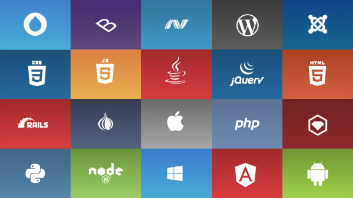

Understanding HTML and Its Importance in Web Development
HTML, or HyperText Markup Language, serves as the backbone of the World Wide Web. It's the fundamental language that web developers use to create web pages and structure content for the internet. Without a doubt, comprehending HTML is the first step to becoming a proficient web developer. HTML is like the blueprint of a building. It provides the structure, organization, and layout for everything you see on a web page. Each element in HTML, from headings to paragraphs, images to hyperlinks, forms to lists, plays a crucial role in delivering content to users in a structured and meaningful way. Why is HTML So Important? Universal Language: HTML is universal and can be understood by browsers on all devices. It ensures that your content can reach a wide audience regardless of the platform or device they're using. SEO Friendliness: Properly structured HTML enhances search engine optimization (SEO). Search engines like Google rely on HTML to index and rank web pages. Clean and semantic HTML can boost your website's visibility in search results. Accessibility: HTML provides the foundation for creating accessible websites. By using semantic HTML elements and attributes, you can make your content more accessible to people with disabilities. Responsive Design: HTML plays a crucial role in creating responsive web designs. With HTML5 and CSS3, you can develop websites that adapt seamlessly to various screen sizes, from desktops to mobile devices. Integration: HTML can seamlessly integrate with other technologies and languages like CSS (for styling) and JavaScript (for interactivity). Together, these technologies form the core of web development. As you delve deeper into web development, you'll realize that HTML is just the beginning. Combining it with CSS for styling and JavaScript for interactivity will allow you to build dynamic and engaging web applications. In conclusion, HTML is not just a language; it's the cornerstone of the web. Understanding HTML and its importance is the foundation upon which you can build a successful career in web development. So, dive into the world of HTML, explore its elements, and unlock the potential to create remarkable online experiences. Happy coding!

Importance of CSS in Web Dev
Cascading Style Sheets, or CSS, is an integral component of web development that profoundly impacts the way websites look and feel. It plays a pivotal role in enhancing the user experience, optimizing website performance, and ensuring consistency across various devices. Here, we explore the significance of CSS in web development in 250 words. Visual Appeal: CSS is the design powerhouse of the web. It empowers developers to control the layout, typography, colors, and visual elements of a website. CSS allows for creative expression, enabling designers to craft visually stunning and engaging web pages. Responsive Design: In today's multi-device landscape, responsive web design is essential. CSS facilitates responsive design by enabling developers to create layouts that adapt seamlessly to different screen sizes. This ensures a consistent and user-friendly experience on desktops, tablets, and smartphones. Consistency: CSS promotes consistency by allowing developers to define styles in one central location and apply them consistently throughout a website. This not only saves time but also maintains brand identity and professionalism. Page Loading Speed: CSS plays a crucial role in optimizing page loading speed. By reducing the size of CSS files and employing techniques like minification, developers can enhance website performance, reduce bounce rates, and improve SEO rankings. Accessibility: CSS is a critical tool for creating accessible websites. It enables developers to structure content, provide alternative text for images, and adjust contrast and font sizes to ensure that web content is accessible to people with disabilities. Maintenance: CSS separates content from presentation. This separation makes it easier to maintain and update websites. When a design change is needed, developers can simply adjust the CSS styles without altering the underlying HTML content. Cross-Browser Compatibility: CSS helps resolve compatibility issues between different web browsers. Developers can use CSS rules to target specific browser behaviors and ensure that websites appear consistently across various platforms. In conclusion, CSS is the artistic and technical glue that holds modern web development together. Its ability to transform plain HTML into visually appealing, responsive, and accessible web experiences cannot be overstated. For web developers, mastering CSS is essential to creating websites that not only look great but also perform seamlessly across the digital landscape, ultimately leading to a more satisfying and inclusive user experience.
JavaScript - The Heart of Web Dev
JavaScript is a programming language that is used to create interactive web pages. JavaScript is the beating heart of modern web development, serving as the dynamic force behind interactive and responsive websites. In 250 words, let's delve into why JavaScript is so crucial to the web development landscape.
1. Interactivity:JavaScript enables dynamic interaction on web pages. It brings websites to life by allowing developers to create features like interactive forms, real-time updates, and engaging animations. Users can now input data, receive instant feedback, and interact with web applications seamlessly.
2. Cross-Browser Compatibility:JavaScript bridges the gap between different web browsers, ensuring that websites function consistently across platforms. It provides a standardized way to manipulate the Document Object Model (DOM), making it easier for developers to write code that works on various browsers.
3. Server-Client Communication:Through techniques like AJAX (Asynchronous JavaScript and XML) and Fetch API, JavaScript facilitates communication between the web browser and the server without the need for page refreshes. This results in smoother, faster user experiences.
4. Web Application Development:JavaScript is the backbone of modern web applications. Frameworks like React, Angular, and Vue.js are built entirely around JavaScript, simplifying complex tasks, enhancing code organization, and speeding up development.
5. Responsive Design:JavaScript plays a pivotal role in creating responsive websites that adapt to different screen sizes and orientations. Media queries, when combined with JavaScript, allow developers to build layouts that work flawlessly on desktops, tablets, and mobile devices.
6. Libraries and Frameworks:JavaScript boasts a rich ecosystem of libraries and frameworks that streamline development. jQuery, for example, simplifies DOM manipulation, while Node.js enables server-side JavaScript development.
7. Enhanced User Experience:JavaScript enriches the user experience by enabling features such as sliders, image carousels, infinite scrolls, and client-side validation. It allows developers to cater to user preferences and create engaging, intuitive interfaces.
8. Community and Innovation:JavaScript has a vast and active developer community that continually innovates and contributes to its growth. New libraries, frameworks, and tools emerge regularly, ensuring that JavaScript remains at the forefront of web development.
In conclusion, JavaScript is the driving force behind the interactivity, responsiveness, and innovation that define modern web development. It empowers developers to create web applications that are not only functional but also engaging and user-friendly. As web technologies continue to evolve, JavaScript's role as the heart of web development is set to grow even stronger, shaping the digital experiences of the future.
Several frameworks and tools are essential in the web development industry.
In addition to JavaScript, There are many more
technologies streamline the development process, enhance productivity, and contribute to the creation of
robust and
feature-rich web applications. Here are some of the most important frameworks and tools widely used in
web
development:
React:
Developed and maintained by Facebook, React is a JavaScript library for building user interfaces. It is renowned for its component-based architecture, which makes it easier to develop complex UIs. React's virtual DOM ensures efficient rendering and seamless updates.
Angular:Created by Google, Angular is a comprehensive web application framework. It offers a structured way to build dynamic, single-page applications. Angular provides powerful features for data binding, dependency injection, and routing.
Vue.js:Vue.js is a progressive JavaScript framework that focuses on simplicity and ease of integration. It is known for its flexibility and gentle learning curve, making it an excellent choice for both small and large projects.
Node.js:Node.js is a server-side JavaScript runtime that allows developers to build scalable network applications. It's commonly used for building APIs and server-side logic. The npm (Node Package Manager) ecosystem provides a vast repository of reusable packages.
Express.js:Express.js is a minimalist web application framework for Node.js. It simplifies the creation of robust APIs and web applications. Express offers features like routing, middleware support, and templating engines.
Webpack:Webpack is a powerful build tool that bundles and manages assets, such as JavaScript, CSS, and images. It optimizes asset loading, reduces page load times, and supports code splitting for efficient resource delivery.
Babel:Babel is a JavaScript compiler that translates modern JavaScript (ES6+) into browser-compatible versions. It ensures cross-browser compatibility and enables developers to use the latest language features.
Sass and Less:These are CSS preprocessors that extend CSS with features like variables, nesting, and mixins. They improve code maintainability and make styling more efficient.
Git:>Git is a distributed version control system used for tracking changes in code repositories. It enables collaboration among developers, version control, and the management of codebase history.
Docker:is a containerization platform that simplifies application deployment and scaling. It packages applications and their dependencies into containers, ensuring consistency across different environments.
Jenkins:Jenkins is a continuous integration system that automates the process of building and deploying applications. It is used for continuous integration and continuous delivery.
These frameworks and tools play a crucial role in modern web development, enabling developers to create scalable, efficient, and feature-rich web applications while enhancing collaboration and code quality. The choice of frameworks and tools depends on project requirements and developer preferences, and mastering these technologies is essential for a successful career in web development.